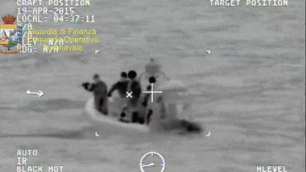
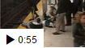

Migrant deaths renew pressure on EU
Italy's PM leads calls for more EU action on migrants after the latest boat capsize in the Mediterranean leaves hundreds feared dead.

2 hours ago
Europe
Watch
2016 Republican message mash-up
17th April 2015'Migrants cross vast stretch of sea'
19th April 2015
Italian PM condemns 'new slave trade'
17th April 2015- 
Footage of US train track rescue
17th April 2015